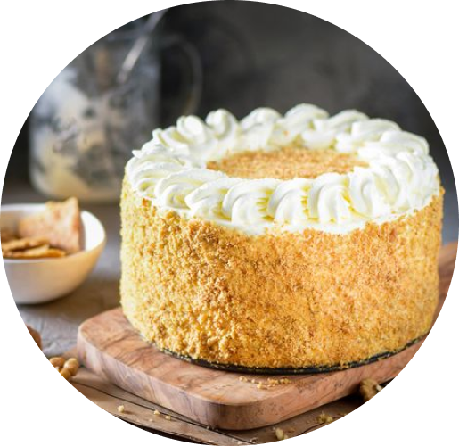
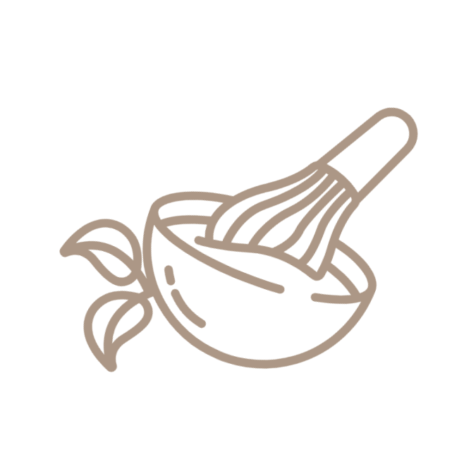

Медовик


Автор: Мария Белова

10 ингридиентов

8 порций

60 мин
«Медовик» - один из самых известных десертов классической русской кухни. Он был рождён на кухне императорского дворца около двухсот лет назад и с тех пор пользуется огромной любовью во всём мире.
Ингридиенты:
| сливки 33–35% | 500 г |
| яйца куриные | 2 шт |
| сметана 25% | 300 г |
| сахар | 110 г |